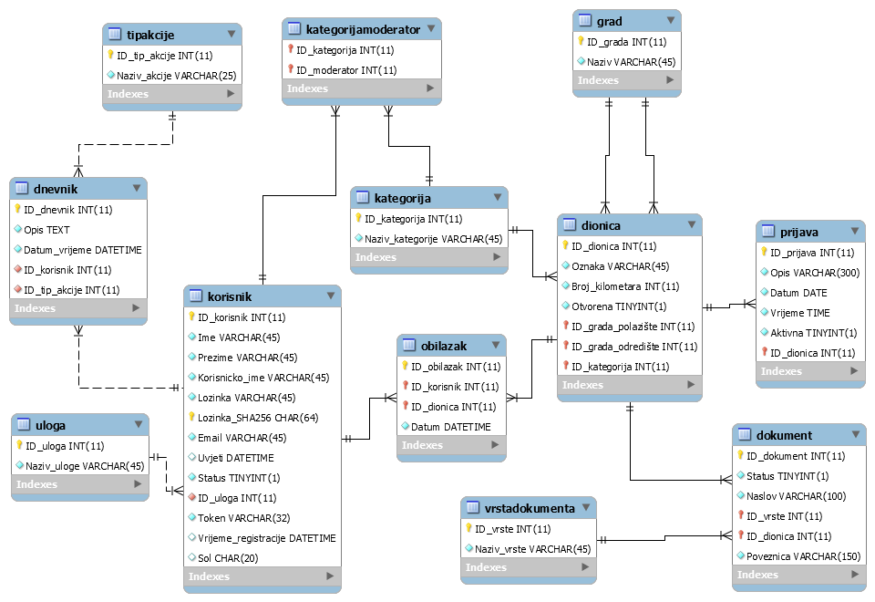

Projektni zadatak vezan je uz sustav za upravljanje popisom cestovnih dionica.
U sustavu postoje četiri vrste korisnika - neregistrirani, registrirani (prometnik), moderator te
administrator.
Opis rješenja
Sustav je realiziran uz pomoć HTML-a, CSS-a, JS/jQuery-a, PHP-a te MySQL-om kao bazom podatka.
ERA model

Popis skripata raspoređeno po mapama
korijenski direktorij
Sadrži sve skripte vezane uz prikaz stranica na temelju Smarty predložaka, prihvaćanje i validaciju
korisničkih inputa, te slanje podataka prema odgovarajućim klasa.
base
Sadrži sve klase kojima vadimo/filtriramo/sortiramo podatke iz baze podataka, uključno sa klasom za
upravljanje bazom podatka (baza.php), upravljanje sesijom (sesija.php), upravljanje Smarty sustavom
(smarty.base.php), te skriptom s pomoćnim funkcijama (util.php).
css
Sadrži sav dizajn, uključujući datoteke sa stilovima prilagođenim za print, te stilovima sa
prilagodbama za disleksiju.
js
U korijenskom js direktoriju nalaze se JS klase koje koristim u više datoteka, te ostale općenite
funkcionalnosti (uvjeti korištenja, pomoć, ...).
U direktoriju js/ajax nalaze se sve funkcionalnosti koje se temelje na AJAX-u (paginacija,
dohvaćanje podataka, ...)
U direktoriju js/valid nalaze se JS datoteke vezane uz validaciju korisničkih inputa.
smarty
Sustav sam realizirao uz pomoć Smarty predložaka, pa se u direktoriju smarty/templates nalaze svi
predlošci za svaku stranicu te općeniti predložak (base.tpl).
privatno
Sadrži skripte vezane uz htaccess i ispis korisnika sustava.
Popis korištenih tehnologija i alata
Za izradu ovog projekta koristio sam Visual Studio Code, XAMP za lokalni PHP i MySQL server, te MySQL
Workbench za ERA modeliranje i upravljanje bazom podataka.
Popis vanjskih biblioteka
moment.js i dataTables.dateTime - za dodavanje datum/vrijeme widgeta kod dnevnika korištenja
jsPDF i jsPDF-AutoTable za pretvaranje HTML tablica u PDF dokument